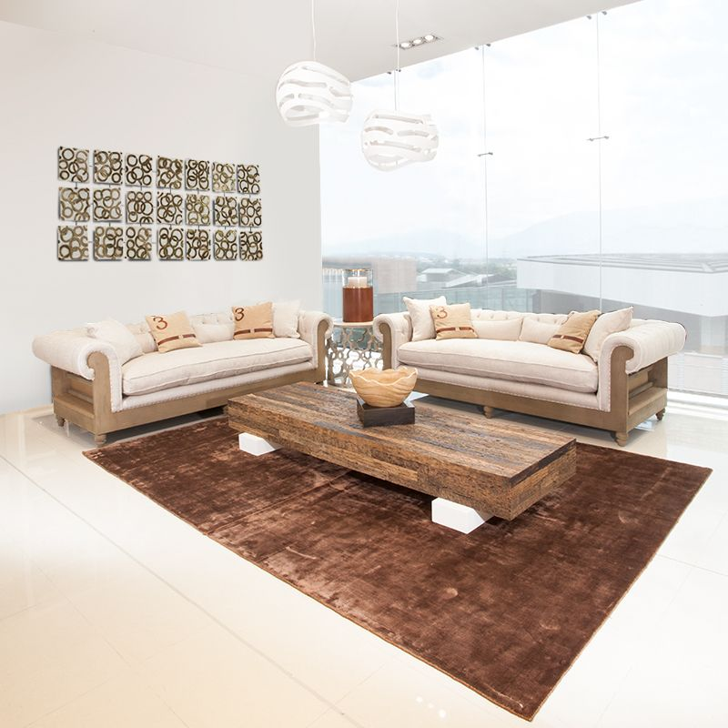
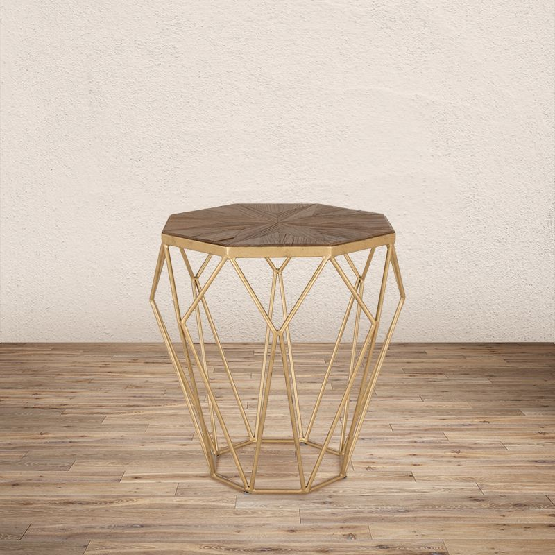

<div class="row">
    <div class="col-sm-12">
        
        <div class="row">
            <div class="col-xs-12">
                <h2 class="title-blog">COMO DECORAR TÚ ESPACIO CON ESTILO VINTAGE</h2>
                <p class="text-justify">Si entramos a destacar la principal característica del estilo vintage podemos reconocer que este movimiento
                    posee una especial atención al detalle, ya que logra crear un entorno que capta la atención de forma
                    correcta, por lo que podrás conseguir espacios armónicos y fluidez.
                </p>
                <p class="text-justify">Por otra parte cuando hablamos del estilo vintage, apuntamos a un diseño inspirado en tendencias que se han
                    usado en otro momento de la historia. Otro de los rasgos importantes de este estilo es que cuenta historias
                    mediante el diseño, ya que puede pertenecer a alguna memoria, no debemos olvidar que hay una gran diferencia
                    entre estilo vintage y una antigüedad.
                </p>
                <p class="text-justify">Cuando quieras usar este estilo en un espacio de tu hogar debes tener algunas cosas en mente; lo principal
                    es tener presente los tonos que son característicos (colores claros, derivados sobretodo del color beige)
                    en muchas ocasiones con toques dorados que crean detalles sutiles, igualmente las siluetas usadas suelen
                    ser definidas y delineadas, el uso de patrones también se ve muy marcado en este estilo, el material
                    que prima es la madera, pero se mezcla con pequeñas partes metálicas, además es necesario entender que
                    este tipo de diseño posee cierto aire clásico pero contemporáneo ya que se mezclan elementos que crean
                    un ambiente lleno de detalles inspiradores.
                </p>
                <p class="text-justify">Es vital ser cuidadosos combinando el mobiliario escogido para esta tendencia, ya que conseguir el ambiente
                    deseado siempre se trata de tener elementos que combinen entre si y no que choquen por ser demasiado
                    aparatosos, cuidar la armonía del espacio depende de la planeación para aplicar correctamente esta tendencia
                    vintage que tanto nos encanta, por su alto interés en los detalles.
                </p>
            </div>
        </div>
        <div class="row">
            <div class="col-sm-6">
                
            </div>
            <br class="visible-xs">
            <div class="col-sm-6">
                
            </div>
        </div>
        <div class="row">
            <div class="col-xs-12">
                <h3>QUE HACER PARA DARLE TOQUES VINTAGE A TU ESPACIO</h3>
                <p class="text-justify">En el momento que decidimos ponerle a nuestra casa o a nuestro espacio un estilo vintage, debemos comenzar
                    por saber que esta tendencia puede incluir más de un tipo de diseño, ya que podemos encontrar desde un
                    estilo más romántico, algo más tradicional o el llamado “boho”, la clave es saber que pueden estar por
                    separado o incluso convivir entre ellos en un mismo espacio.
                </p>
                <p class="text-justify">Para tener claro como concebir el espacio, en este caso nuestra sala, un buen tip es comenzar escogiendo
                    un sofá que evoque este estilo, es decir con telas “crudas”, colores pasteles, acabados con maderas o
                    piezas metálicas, ya que será el punto focal de nuestro espacio, si dado el caso no queremos que el sofá
                    sea lo más relevante en el espacio, una consola también puede funcionar. Un buen consejo es mezclar piezas
                    metálicas con madera para crear un contraste interesante, conservando la originalidad de la tendencia
                    vintage.
                </p>
                <p class="text-justify">Un espacio blanco, con cierto tipo luz, donde la madera juegue un papel crucial y se destaque gracias a sus
                    acabados, ayuda a que el espacio tenga un ambiente cálido y así crear ese toque de nostalgia que envuelve
                    al estilo vintage.
                </p>
                <p class="text-justify">En Matisses contamos con una gran variedad de mobiliario que hace parte de esta tendencia mundial, desde
                    sofás, mesas auxiliares, consolas, cojines, sillas y demás, para crear espacios donde cada detalle está
                    pensado minuciosamente.
                </p>
            </div>
        </div>
        <new-products></new-products>
        <div class="row">
            <div class="col-xs-12 text-center">
                <button class="btn btn-default">VER MÁS</button>
            </div>
        </div>
    </div>
</div>